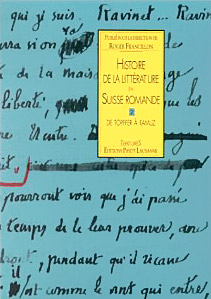
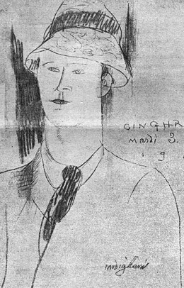
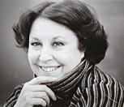

<!doctype html>
<html lang="fr">

<head>
  <title>Association des Amis de Charles-Albert Cingria &middot; Cingria dans la littérature romande</title>
  <meta name="keywords" content="" />
  <meta name="description" content="" />
  <meta charset="utf-8" />
  <meta http-equiv="X-UA-Compatible" content="IE=edge,chrome=1" />
  <meta name="viewport" content="width=device-width, initial-scale=1" />

  <link rel="stylesheet" href="css/reset.css" type="text/css" />
  <link rel="stylesheet" href="css/1140.css" type="text/css" media="screen" />
  <link rel="stylesheet" href="css/styles.css" type="text/css" />
  <link rel="stylesheet" href="css/timelinr.css" type="text/css" />
  <link rel="stylesheet" href="css/qtip.css" type="text/css" />
  <link rel="stylesheet" href="css/fullsize.css" type="text/css" />

  <link rel="shortcut icon" href="img/favicon.ico" />
  <link href='https://fonts.googleapis.com/css?family=Goudy+Bookletter+1911' rel='stylesheet' type='text/css'>
  <link href='https://fonts.googleapis.com/css?family=Raleway:100' rel='stylesheet' type='text/css'>
  <link href='https://fonts.googleapis.com/css?family=Cantarell' rel='stylesheet' type='text/css'>
  <link href='https://fonts.googleapis.com/css?family=Crimson+Text:400,600' rel='stylesheet' type='text/css'>

  <script type="text/javascript" src="js/jquery.js"></script>
  <script type="text/javascript" src="js/css3-mediaqueries.js"></script>
  <script type="text/javascript" src="js/scrollto.js"></script>
  <script type="text/javascript" src="js/easing.js"></script>
  <script type="text/javascript" src="js/quovolver.js"></script>
  <script type="text/javascript" src="js/timelinr.js"></script>
  <script type="text/javascript" src="js/qtip.js"></script>
  <script type="text/javascript" src="js/jscroll.js"></script>
  <script type="text/javascript" src="js/masonry.js"></script>
  <script type="text/javascript" src="js/fullsize.js"></script>
  <link href="https://vjs.zencdn.net/c/video-js.css" rel="stylesheet">
  <script src="https://vjs.zencdn.net/c/video.js"></script>
  <!--[if IE]> <script src="http://html5shiv.googlecode.com/svn/trunk/html5.js"></script><![endif]-->
  <!--[if lte IE 7]><script src="js/IE8.js" type="text/javascript"></script><![endif]-->
  <!--[if lt IE 7]><link rel="stylesheet" type="text/css" media="all" href="css/ie6.css"/><![endif]-->
</head>

<body>
  <div class="container">
    <div class="row">
      <div id="logo" class="fourcol">
        <p><a href="accueil"></a></p>
      </div>
      <div class="eightcol last">
        <nav>
          <ul>
            <li>
              <a href="accueil" >Accueil</a>            </li>
            <li>&middot;</li>
            <li>
              <a href="association" >L'Association</a>            </li>
            <li>&middot;</li>
            <li>
              <a href="premiere-edition-des-oeuvres-completes" >Les Œuvres complètes</a>            </li>
            <li>&middot;</li>
            <li>
              <a href="chronologie" >Chronologie</a>            </li>
          </ul>
          <ul>
            <li>
              <a href="les-livres" >Les livres</a>            </li>
            <li>&middot;</li>
            <li>
              <a href="les-fonds" >Les Fonds</a>            </li>
                          <li>&middot;</li>
              <li>
                <a href="les-petites-feuilles" >les Petites Feuilles</a>              </li>
              <li>&middot;</li>
              <li>
                <a href="cingria-dans-la-litterature-romande"  class="active" >Pour aller plus loin</a>              </li>
                      </ul>
        </nav>
      </div>
    </div>
  </div>

  <div class="container">
    <div class="row">
      <style type="text/css" media="screen">
  .foot_note {
    font-size: 0.70588235294118em;
    vertical-align: super;
    color: #e00071;
  }

  .blockquote {
    display: block;
    margin: 36px;
    font-size: 0.94117647058824em;
    line-height: 1.11764705882353em;
  }

  .article h2 {
    padding: 2em 0 1em 0;
  }

  .quotation {
    display: block;
    padding: 0.47058823529412em;
    background-color: #ededed;
    border: 1px solid #e3e3e3;
    margin-bottom: 1em;
    font-size: 0.88235294117647em;
  }

  .quotation em {
    color: #4d4d4d;
    font-style: italic;
    font-size: 1em;
  }

  .pink {
    color: #e00071;
  }

  .section {
    width: 1070px;
    clear: both;
    float: left;
  }

  .section_main {
    float: left;
    width: 830px;
  }

  .section_quotation {
    float: right;
    width: 240px;
    font-size: 1em;
    margin-top: 94px;
  }
</style>

<div id="main" class="twelvecol last">

  <h1><span>Cingria dans la littérature romande</span></h1>
  <div class="article">


    <div class="section">
      <div class="section_main">
        <strong>Maryke de Courten, <em>Charles-Albert Cingria</em>, dans Roger Francillon (dir.),<br />Histoire de la littérature en Suisse romande, t.II, Lausanne, Payot, 1997, pp.449-471</strong>
        <h2>Premières orientations (1883-1904)</h2>
        <p>
          
          « Je suis Constantinopolitain, c'est-à-dire Italo-franc levantin »<span class="foot_note">1</span> ! L'auteur qui se présente ainsi n'a pas une goutte de sang helvète dans les veines et garde de ses origines l'indépendance et le brio du conteur oriental. Il naît à Genève, le 10 février 1883, quatre ans après son frère Alexandre, le futur peintre. Son père, Albert Cingria, originaire de Raguse, associé dans la maison d'horlogerie Patek Philippe, s'était naturalisé et avait acquis la bourgeoisie de Genève ; il meurt en 1891. Sa mère, Caroline Stryienska, est d'ascendance française, par la famille de l'Estocq, et polonaise d'un milieu artiste et cultivé (l'oncle de Charles-Albert, Casimir Stryienski, fut un célèbre spécialiste de Stendhal).
        </p>
        <p>Charles-Albert fait ses classes à Genève, puis à l'abbaye de Saint-Maurice (1896-1898) ; « ce resserrement qui est un haut-lieu » le marque profondément, lui ayant appris à bien se tenir « sur une souche austère ». « Je ne connais pas un seul élève sorti de là, note-t-il avec une certaine fierté, […] qui n'ait pas conservé le pli moral, mais également, dirai-je, physique de cette participation aux apprêts d'un sacerdoce de roc et d'eau de source et de sang égyptien-romain, si extraordinairement efficace en saturation anoblissante. » Après un séjour au collège d'Engelberg, il interrompt néanmoins ses études pour se consacrer à la musique ; ses maîtres seront Jaques-Dalcroze et Barblan à Genève, Sgambati à Rome. La Ville éternelle, d'emblée, l'ensorcelle. Comment en serait-il autrement ? L'air y est imprégné d'un « calme bon », l'organiste de la Minerva lui cède parfois sa place, et le soir il retrouve dans son appartement du Capitole son chat angora, son piano, ainsi qu'une superbe collection de livres prêtés par le Palais Farnese ! En 1903, il abandonne les études de musique pour se vouer à l'écriture, et résume sans complaisance le chemin parcouru, dans une lettre adressée à Adrien Bovy :</p>
        <p><span class="blockquote">j'ai usé tout ce que j'avais de fibres musicales, plus rien ne coule naturellement, plus rien n'est sincère. […] mon clavier dévide des centaines de formules machinales qui s'enchaînent dans un ordre logique mais ne concordent plus avec mes sentiments. La littérature est moins difficile ! (plus pourtant qu'Alexandre a l'air de croire) cependant ma langue poétique est déjà finie, j'en ai mal au cœur c'est pourquoi je vais me mettre à la prose sévère de sorte que je comprime une évolution qui mènerait à une décadence.<span class="foot_note">2</span></span></p>
        <p>S'il recherche la « prose sévère », sa vie est loin d'être austère. Ses séjours à Genève sont entrecoupés de nombreux voyages, en Italie toujours, mais aussi à Constantinople où l'accueillent régulièrement oncles et tantes paternels, en Espagne, au Maroc, dans le Sahara algérien d'où parviennent à ses amis des missives d'une drôlerie immédiatement convaincante. En 1903, encore, paraît le premier article signé de son nom, consacré aux vitraux de Saint-François à Lausanne : Charles-Albert y prend la défense de son frère Alexandre, lauréat du premier concours de la Municipalité, et dont la modernité suscite une vive polémique.</p>

      </div>
      <div class="section_quotation" style="margin-top: 137px;">
        <div class="quotation"><span class="pink">1</span> « Impressions d’un passant à Lausanne », <em>OC</em>, t. III, p. 32.</div>
        <div class="quotation"><span class="pink">2</span> « Ce pays qui est une vallée », <em>Ibid</em>. , p.121. Sauf mention du contraire, toutes les références
          renvoient à l’édition des <em>Œuvres complètes (<em>OC</em>) </em> en onze tomes et à la <em>Correspondance générale</em> <em>(CG)</em> en cinq tomes (Lausanne,
          L’Age d’Homme, 1967-1971).</div>
        <div class="quotation"><span class="pink">2</span> « Impressions d’un passant à Lausanne », <em>OC</em>, t. III, p. 32.</div>
      </div>
    </div>


    <div class="section">
      <div class="section_main">
        <h2>La guerre des revues (1904-1914)</h2>
        <p>En 1904, Charles-Albert publie avec Ramuz, Adrien Bovy et Alexandre un petit livre, <em>Les Pénates d'argile</em>. Son texte, signé Adalbert d'Aigues-Belles, invite à une rêverie orientalisante dans une langue recherchée. La plaquette attire l'attention de Gonzague de Reynold qui engage les quatre jeunes écrivains romands à se joindre à lui ; c'est le départ d'une nouvelle revue, <em>La Voile latine</em>, qui voguera contre vents et marées pendant six ans et dont les principes seront l'art pour l'art, une certaine réaction contre le germanisme et la prédominance de l'influence latine. Cependant, un clivage ne tarde pas à se manifester ; d'une part les frères Cingria et Adrien Bovy (Ramuz ayant pris ses distances), tenants d'une latinité et d'un catholicisme purs, d'autre part Gonzague de Reynold et Robert de Traz, qui donnent leur place à la tradition germanique et protestante. La prise de position de Charles-Albert semble davantage dictée par des options culturelles que politiques : le choix d'un catholicisme volontiers exubérant et triomphateur face à un protestantisme austère et dépouillé, un anti-jansénisme, en somme, comme il ressort clairement d'une lettre adressée à Claudel en 1915.<span class="foot_note">3</span> Dans les articles qui paraissent sous son nom dans <em>La Voile latine</em>, Charles-Albert lutte pour préserver l'âme antique, celle qui a produit, notamment, les antiphonaires et la musique grégorienne. Bientôt le souci de promouvoir la littérature romande passe à l'arrière-plan et celui d'un nationalisme culturel puis politique prend le dessus dans la revue. Se voyant refuser un article par Robert de Traz, Alexandre abandonne en 1910 <em>La Voile latine</em>, dont les deux frères obtiennent la liquidation en janvier 1911. Charles-Albert, aussitôt, fonde <em>La Voix clémentine</em>, qui ne connaît que deux numéros, puis rejoint <em>Les Idées de demain</em>, périodique dirigé par son frère, auquel il donnera sept articles sous le pseudonyme de Jean-Foin Basius.
          <br />En 1906, sa première plaquette, <em>A propos de l'esperanto dite langue universelle</em>, a révélé au lecteur sa ferveur et son ironie à travers une prose haute en couleur où l'image a fonction d'argument. Au fil des ans, il cède à l'attraction littéraire de Paris. En 1904, déjà, il y a rejoint son ami Ramuz, dont il a partagé la chambre pendant un mois ; depuis lors, il y revient assez régulièrement pour la saison d'automne.
        </p>
      </div>
      <div class="section_quotation">
        <div class="quotation"><span class="pink">3</span> <em>Ibid</em>., t. IV, p .23.</div>
      </div>
    </div>


    <div class="section">
      <div class="section_main">

        <h2>Le cercle parisien (1914-1928)</h2>

        <p>Après le décès de sa mère en 1913, les rapports de Charles-Albert avec la France se resserrent naturellement, d'autant que, en 1914, il fait la connaissance de Sylvain Pitt, puis de Paul Claudel auquel le liera une estime réciproque. Il s'installe rue Gabrielle, sur la butte Montmartre, et, « petit jeune homme à cravate verte »<span class="foot_note">4</span>, mène la vie de bohème à Montparnasse, prend ses repas Chez Rosalie, avec Modigliani, Ortiz, Satie, Utrillo. Il garde cependant ses liens avec les écrivains romands et collabore aux <em>Cahiers vaudois</em> (« Extraits des notes de garage du neveu aux billettes » et « Essai de profession de foi d'un embusqué savoyard », 1915). En 1916, il rencontre Cendrars. Max Jacob le présente à ses amis, Cocteau, Marinetti, Tzara, Georges Hugnet. Il rompt avec le Montparnasse en 1918 et s'installe 59, rue Bonaparte, à deux pas de la place Saint-Sulpice, dans un deux-pièces qui sera son domicile parisien jusqu'à sa mort. Il lit Walt Whitman, se passionne pour l'essayiste anglais Gilbert Chesterton et fréquente les réunions chez Daniel Kahnweiler où il retrouve Artaud, Salacrou, Satie, Robert Desnos. Il surprend à la fois par sa conversation éblouissante et par sa mise négligée. C'est que la guerre l'a privé de toute ressource financière ; il donne des leçons pour subsister, mais sa correspondance trahit, dès cette époque, un cruel dénuement.</p>
        <p>Heureusement, il y a les bibliothèques ! Saint-Geneviève et la Bibliothèque de l'Arsenal, où Charles-Albert se penche avec respect sur les manuscrits du Haut Moyen Age. Son regard débordant des documents associe dans le même émerveillement la contemplation de graphies millénaires et le spectacle quotidien des chalands qui glissent sur la Seine voisine :</p>
        <p><span class="blockquote">La Bibliothèque de l'Arsenal est bien aimable, avec ses quais, avec ses eaux, quand, tout à coup, quand on est dans les neumes et les acclamations carolingiennes en grec à l'encre jaune, un âpre sifflet traverse tout qui est d'un remorqueur aux avants superbement peints traînant dix-sept barques chargées à couler de tout un territoire de sable roux. Mais elles ne coulent pas : c'est le Soleil, plein de vieille orgie mérovingienne, qui s'affaisse et croule. Alors on est pris d'un très grand amour des gens, des choses, des gens qui entretiennent si bien les choses.<span class="foot_note">5</span></span></p>
        <p>Ses recherches le mènent aussi sur les routes d'Italie (Turin, Bologne, Chiari, Vérone) et d'Allemagne (Berlin, Bamberg, où, devant le psautier de sainte Cunégonde et les signes rythmiques à profusion qui confirment ses hypothèses, l'émotion est à son comble). Dans ces pérégrinations, un accident de parcours, cependant : en 1926, à Rome, il est incarcéré par la police mussolinienne ; sa détention durera trois mois.<br />Souvent, Cingria s'échappe de Paris à vélo, sillonne l'Oise, l'Eure-et-Loir, la Beauce, couche dans le foin et joue de l'orgue dans les églises vides. Ne se qualifiait-il pas lui-même de « chat sauvage » ou de « monsieur en complet gris suivant les nuages » ? Promeneur libre, pèlerin, éternel nomade, mais dont le nomadisme est une philosophie. La mobilité, pour Cingria, est un état d'alerte, d'attention incessamment renouvelée à ce qui est. Point n'est besoin de surnaturel, ce qui est extraordinaire, c'est l'ordinaire, quand on est férocement attaché aux sucs d'en dessus et d'en dessous de l'écorce terrestre ; écouter, humer, glisser et laisser pleinement advenir, n'est-ce pas cela qu'on appelle exister ? Et ce témoignage de vélocipédie heureuse n'eût pas manqué de réjouir Gaston Bachelard :</p>
        <p><span class="blockquote">Le jour s'affaisse. De suaves petites étoiles commencent à naître. Le sol est invitant, fardé, aimable, élastique, lunaire. Ou bien c'est moi, et alors je suis dans des dispositions extraordinaires, ou bien c'est ce grand frémissement subit d'en haut des peupliers qui n'est pas des oiseaux mais le vent que je ne sens pas parce que je vais avec, qui me pousse et fait que je vais si vite.Aucune fatigue. Cela pourrait être éternel. Je suis un cristal qui ne respire pas : qui existe – c'est l'intention – le reste qui était fendu pour récupérer, obligeant à un rythme d'esclave, est aboli. Par le bas, je reste animal, mais je suis une boule. J'ai frais aux chevilles. Je n'ai plus besoin de voir. C'est adorable. J'ai aussi un peu peur. C'est adorable. Je vais excessivement vite. Un bruit, le seul, à part ce torrent momentané des feuilles sur quoi éclate la lune, est ce grincement mutuel – sexuel – de deux bois profondément encaustiqués, l'un, ocre, de vieux miel de frelons, l'autre grenat comme le porphyre de certaines gaules des saules, et c'est mes jantes. Je suis heureux de ce siècle, heureux de ce sable, heureux de ma selle Brooks aux exquis craquements. <span class="foot_note">6</span> </span></p>
      </div>
      <div class="section_quotation">
        <div class="quotation"><span class="pink">4</span> <em>OC</em>, t. III, p. 205.</div>

        <div class="quotation"><span class="pink">5</span> <em>Ibid</em>., t. II, p. 208.</div>

        <div class="quotation"><span class="pink">6</span> <em>Ibid</em>., p. 42.</div>
      </div>
    </div>


    <div class="section">
      <div class="section_main">

        <h2>La constitution de l'œuvre (1928-1939)</h2>

        <p>En 1928, Cingria fait paraître son premier vrai livre, d'une surprenante modernité, <em>Les Autobiographies de Brunon Pomposo</em>. L'année suivante, encouragé par Sven Stelling-Michaud, il livre au public le fruit de longues recherches passionnées, <em>La Civilisation de Saint-Gall</em>, une étude remarquable par son érudition et son souffle poétique, récompensée en 1932 par un prix de la Fondation Schiller.<br />En 1929, encore, deux plaquettes, <em>Pendeloques alpestres</em> et <em>Le Seize Juillet</em>, chez Mermod à Lausanne. En 1930 paraissent <em>Les Limbes</em>, illustrés par Lurçat, auquel il avait déjà consacré une petite plaquette (<em>Lurçat, ou la Peinture avec des phares</em>, 1927) et l'année suivante, chez Mermod, <em>Le Canal exutoire</em>, puis, en 1932, <em>Impressions d'un passant à Lausanne</em> et <em>L'Eau de la dixième milliaire</em>. En 1932 également paraît chez Payot, dans la série des <em>Cahiers romands</em>, un autre ouvrage d'érudition, <em>Pétrarque</em>, récompensé en 1935 par le Prix Eugène Rambert. Le tirage de ces divers titres n'excède jamais cinq cents exemplaires. En outre, Mermod concède à Cingria une rente mensuelle durant cinq ans (contrat dit « du Pavillon » <span class="foot_note">7</span>).<br />Jean Paulhan, ayant reconnu le talent et l'originalité de l'écriture de Cingria, lui ouvrira les portes de la prestigieuse <em>Nouvelle Revue française</em>, à laquelle il collaborera régulièrement de 1933 à 1940, et de 1953 à sa mort, dans la chronique des livres d'abord (Cingria à Jean Paulhan, en avril 1933 : « Des notes, n'est-ce-pas ? même des choses courtes. Pas d'œuvres. Signifier, plaquer, n'est-ce-pas ? Inoculer la compréhension et la vision par vibration, avec des titres qui déjà contiennent. C'est le ton de la revue, et c'est le mien »<span class="foot_note">8</span>), puis dans une rubrique « Air du mois » (quelques titres, « Hippolyte Hippocampe », « Navigation fluviale », « Canicules sardes », « Miei pigioni », « L'homme né naturellement bon », « Sociologie » font apparaître la variété des thèmes abordés dans une absolue liberté). Une amitié fondée sur une admiration mutuelle lie les deux hommes, une commune passion pour le langage, pour l'inattendu, ainsi que la méfiance des spéculations abstraites.<br />A partir de 1934, Cingria donne des articles à la <em>Revue musicale</em> de Prunières puis à Mesures. Lors de séjours en Suisse, il fréquente le groupe d'Aujourd'hui, ainsi que Paul Budry, Ansermet, Auberjonois et Géa Augsbourg, dont il préface trente-huit dessins dans <em>Notre terre et ses gens</em> (1937) ; en Savoie, il rencontre Constantin Rey-Millet et Jean-Marie Dunoyer.<br />S'il reçoit le Prix Rambert en 1935 et obtient un réel succès d'estime auprès d'écrivains de premier plan, tels que Max Jacob et Claudel, la vie de Cingria demeure précaire, semée d'incertitudes et d'humiliations, comme en témoigne une page du <em>Petit labyrinthe harmonique</em>, texte saisissant sur la vie d'artiste et l'état mendiant :</p>
        <p><span class="blockquote">Qu'est-ce que j'avais à recommencer modestement avec ce monde faux ? Ou avec ces élites, ces jeunes arrivés tard et sans rien, me croyant trop heureux, me faisant la grâce, avec leurs coqs, leurs pierrots russes, leurs petites sucreries élégiaques, leurs choses à la page ou plus à la page, moi qui ai un lieu, une vieillesse d'autres, des térébinthes, d'immenses biens, des flottilles de lourd cèdre où passent de fantomatiques fastueux poissons au fond de la mer, mais qui suis ailleurs, seul avec ce plectre à faire chuter les étoiles ; ne voulant pas, ne pouvant plus, me laissant vivre : de rien : de bonjours, de bonsoirs, de verres et de réciprocités de verres à droite et à gauche : de bouts de pain trouvés chez moi sous des caisses ; m'avilissant, me faisant aimable alors que je suis tueur, me faisant pittoresque alors que je suis roi.<span class="foot_note">9</span></span></p>
      </div>
      <div class="section_quotation">
        <div class="quotation"><span class="pink">7</span> Du nom de la maison de campagne d’Henry-Louis Mermod à Chexbres, où il avait l’habitude de recevoir ses auteurs et amis. Le contrat « obligeait l’écrivain à fournir à l’éditeur un certain nombre de lignes par mois. Les textes régulièrement livrés, semble-t-il, ne furent jamais publiés » (<em>Ibid</em>., t. XI, p. 185). Ils figurent dans les Œuvres complètes sous le titre « Textes du Pavillon », <em>Ibid</em>., pp. 187-220.</div>

        <div class="quotation"><span class="pink">8</span> <em>CG</em>, t. IV, p. 64. </div>

        <div class="quotation"><span class="pink">9</span> <em>OC</em>, t. II, p. 32.</div>
      </div>
    </div>


    <div class="section">
      <div class="section_main">
        <h2>La guerre et l'après-guerre.<br />
          Les expédients et le projet des œuvres complètes (1939-1954)</h2>

        <p>Lorsque la guerre éclate, Charles-Albert regagne la Suisse, pour se fixer, au printemps 1941, à Fribourg dans une mansarde, Grand'Rue 5, maison qu'habitent également Aloÿs-Jean Bataillard, Georges Borgeaud et Pierre-Olivier Walzer. On le rencontrera aussi à Lausanne (où il fréquente la propriété de Mermod, l'atelier d'Auberjonois, le Café de l'Ours, le Central), à Ouchy, à Morges ou encore en Valais en compagnie de Paul Monnier.<br />Il disperse, au gré des sollicitations les plus diverses, chroniques et notules ; souvent les textes sont regroupés et alors richement illustrés. En 1941 paraît le premier livre à grand tirage, Stalactites (illustrations d'Auberjonois), puis <em>Enveloppes</em> (1943, luxueuse édition chez Gonin, ornée de lithographies d'Auberjonois), <em>Florides helvètes</em> (1944), <em>Le Parcours du Haut Rhône ou la Julienne et l'ail sauvage</em> (1944, croquis de Paul Monnier), <em>Le Camp de César</em> (1945, lithographies de Géa Augsbourg), <em>Musiques de Fribourg</em> (1945, illustré par Bernard Schorderet).<br />Il collabore à <em>Formes et Couleurs</em>, à <em>Curieux</em>, à <em>Poésie 42</em> et à <em>Confluences</em>, à quelques quotidiens suisses, invente et se constitue rédacteur en chef d'un journal minuscule, <em>Petites feuilles</em> ; on trouve aussi son nom dans les journaux publicitaires de la maison de commerce Charles Veillon. Cingria a néanmoins l'impression que la Suisse ne s'intéresse pas à sa prose (à Jean Paulhan, en 1944 : « Ici en Suisse c'est le plus absolu mépris. Il n'y a que les musiciens qui me témoignent de l'estime »<span class="foot_note">10</span>). Il donne huit conférences-récitals au Conservatoire de Lausanne, de janvier à mars 1945, sur les troubadours dantesques, le plain-chant romain, Pétrarque et Philippe de Vitry, déconcerte l'auditoire par une érudition musicale aussi éblouissante que peu conformiste, faisant parcourir à son public un singulier périple, qui va de Pétrarque et Guillaume de Machaut au syncopé naturel des lavandières de Madagascar et au Dumberton Oaks de Stravinski.<br />Après la mort de son frère, le 9 novembre 1945, Cingria retrouve Paris et son logement, rue Bonaparte, où les meubles et les bibelots sont demeurés miraculeusement intacts après sept ans d'absence. Paulhan lui réserve un accueil chaleureux et lui fait part de son projet de publication des œuvres complètes chez Gallimard. Cingria exulte ; le contrat est signé fin novembre 1945. En 1947 paraît <em>Le Bey de Pergame</em>, et un troisième et dernier ouvrage d'érudition, <em>La Reine Berthe et sa famille</em>, consacré par la Fondation Schiller, une fastueuse séance de signature et un dîner à la Closerie des Lilas auquel assistent entre autres Claudel, Stravinski, Paulhan, Michaux, Salmon, Follain et un des plus fidèles amis de Charles-Albert, le peintre Abdul Wahab. Hélas, le premier volume des œuvres complètes, <em>Bois sec bois vert</em> (1948), n'aura pas le succès escompté et le projet demeure sans suite.<br />A partir de 1950, la santé de Cingria se détériore. Il partage ses dernières années entre la Suisse, Paris et le Midi, en particulier Aix-en-Provence où il jouit du dévouement et de l'amitié inconditionnelle de Méraud Guevara. Il donne de nombreux textes à <em>La Parisienne</em>, d'autres aux <em>Cahiers de la Pléiade</em> et, en 1953, reprend sa collaboration à la <em>N.R.F.</em> au moment de sa réapparition sous le titre de <em>La Nouvelle Nouvelle Revue française</em>.<br />Le 1er août 1954, Charles-Albert Cingria, ramené <em>in extremis</em> d'Aix-en-Provence, succombe à une cirrhose du foie et s'éteint à Genève dans le dénuement et l'anonymat.<br />Quelques publications posthumes (<em>Le Novellino, Xenia et le diamant</em>, 1955), des éditions en livre de poche et d'autres sous forme d'anthologies, mais surtout le regroupement des <em>Œuvres complètes</em>, puis l'édition de la <em>Correspondance générale</em> et d'une <em>Bibliographie</em><span class="foot_note">11</span> rendent Cingria accessible à un nombre de lecteurs qui semble augmenter chaque année.</p>
      </div>
      <div class="section_quotation">
        <div class="quotation"><span class="pink">10</span> <em>CG</em>, t. IV, p. 155.</div>

        <div class="quotation"><span class="pink">11</span> Autres ouvrages de Charles-Albert Cingria disponibles en librairie : <em>Les Autobiographies de Brunon Pomposo</em>, Lausanne, L’Age d’Homme, « Poche suisse », 1997. <em>Bois sec bois vert</em>, Paris, Gallimard, « L’Imaginaire », 1983. <em>Charles-Albert Cingria</em> (anthologie), Bordeaux, L’Escampette, 1995. <em>La Fourmi rouge</em>, Lausanne, L’Age d’Homme, « Poche suisse », 1978. <em>Florides helvètes</em>, Lausanne, L’Age d’Homme, « Poche suisse », 1983. <em>Lettre au vérificateur des eaux</em>, chroniques, Paris, La Différence, 1995. Portraits, Lausanne, L’Age d’Homme, « Poche suisse », 1994. <em>La Reine Berthe</em>, Lausanne, L’Age d’Homme, « Poche suisse », 1992. <em>Vingt-cinq lettres à Adrien Bovy</em>, Lausanne, L’Age d’Homme, 1967.</div>


      </div>
    </div>


    <div class="section">
      <div class="section_main">

        <h2>Le poète érudit</h2>

        <p>Dans ses trois œuvres les plus élaborées, Cingria fait preuve d'une impressionnante érudition en musicologie, en histoire médiévale, en science linguistique.<br /><em>La Civilisation de Saint-Gall</em> révèle une somme de connaissances musicales et musicologiques ainsi qu'une conception nietzschéenne de l'art. Retraçant l'histoire de l'abbaye, sa vie intense et l'influence considérable qu'elle exerça, non seulement en Suisse, mais sur toute l'Europe, dans le renouveau lyrique du plain-chant aux IXe et Xe siècles, Cingria propose une clé de lecture de la musique grégorienne. Il fonde cette dernière sur des valeurs rythmiques et proportionnelles, optant pour une réduction des barres de mesure dans l'interprétation des neumes (on se souvient que les neumes furent la première représentation visuelle de la ligne musicale, qui, au prix de mille perfectionnements, est devenue notre notation actuelle). Pour consolider son interprétation, il improvise sur l'épinette florentine du XVIIe siècle qui ne le quitte guère. Mais surtout, il étudie les textes. Il remonte jusqu'aux écrits théoriques portant sur la métrique latine et grecque (il relit Aristoxène de Tarente, Porphyre et son commentaire aux Harmoniques de Ptolémée, Commodien, saint Augustin et bien d'autres), étudie les théories du rythme musical du premier au XIIe siècle de notre ère, en particulier les écrits de Rémi d'Auxerre. Il rejoint dans leur analyse les thèses des mensuralistes dont les études s'étaient multipliées depuis le dernier tiers du XIXe siècle, lorsqu'il écrit : « les neumes sont <em>comme des pieds</em> […], s'unissent <em>comme les pieds</em>, c'est à savoir rythmiquement [...] ce qui est mesure - <em>metrum</em> - c'est deux ou plusieurs de ces pieds non plus continus mais enfermés dans une série »<span class="foot_note">12</span>, d'où des rythmes très complexes avec un nombre important de syncopes et de ruptures. Il s'oppose vigoureusement aux équalistes de Solesmes, qui ne voient dans la portée de neumes qu'une ligne molle. Selon Cingria, la réalité rythmique a été scandaleusement aplatie par l'école bénédictine. Or, le chant ne doit pas devenir « impondérable, cotonneux, platonique, eunuchisé de tout ce qui définit le rythme »<span class="foot_note">13</span>. Cingria, lui, verrait plutôt dans les alleluias de puissants chants de halage…<br />C'est à l'abbaye de Saint-Gall que l'on doit l'une des plus fécondes inventions médiévales, le trope (pièce dérivant du chant grégorien, mais s'en détachant comme un fruit trop mûr, sorte de séquence ou de prose calquée sur les vocalises du graduel). En ses ramifications plus lointaines, le trope va déborder l'Eglise et s'épanouit dans la chanson populaire, notamment dans la poésie lyrique des troubadours aquitains (le <em>tropator</em> étant, selon une étymologie non officielle mais probable, le faiseur de <em>tropes</em>). Or, Cingria analyse dans le détail l'invention du trope et des séquences par Notker le Bègue, ce moine qui chercha un moyen de fixer les longues mélodies dans sa mémoire défaillante : « C'est […] en chantant, en jubilant, en émettant des sons, des neumes, des rythmes sans paroles qu'est venue à quelques hommes, entre autres à ce bègue sublime de Heilgove, l'idée de parer, de dire des choses allant bien avec ce chant, et c'est cela qui fut le pauvre et merveilleux recommencement de toute la poésie jusqu'à nos jours. L'événement donc eut lieu à Saint-Gall, en Suisse, vers 880. »<span class="foot_note">14</span> Les premières proses assonancées rythmées sont les premiers poèmes. Pour Cingria, il ne fait pas de doute que c'est la musique qui enfante le poème et non l'inverse. La musique est antérieure aux mots, elle est l'expression de l'essence intime du monde. Le classicisme a tout faussé en imposant des normes étroites. La nouvelle poésie, avec Rimbaud, Claudel, Péguy, Cendrars, Whitman, retrouve la liberté et la sécurité du plain-chant. D'où le mépris de Cingria pour ce qu'il n'hésite pas à qualifier de « musique anormale », à savoir le récitatif italien jusqu'à Wagner, une musique décrivant des sentiments romantiques puis impressionnistes (jamais l'Antiquité ne fit en musique gesticuler le désordre de nos sentiments. Cela est une faute, la conjonction de plusieurs cerveaux, de l'académisme!). Entre Mozart et Stravinski, rien qui fût digne à ses yeux d'être appelé musique. Stravinski, en revanche, doté de l'état musical pur, a tout son respect et incarne la musique contemporaine. Il manifeste également sa compréhension du jazz – ce qu'il a appelé le syncopé anglo-nègre – mais qui a dû se limiter à celui des spirituals et des orchestres du type Nouvelle-Orléans.<br />Cette conception de la musique, Cingria l'a exprimée dans divers articles relativement techniques, dont le premier date de 1910 (« Essai de définition d'une musique libérée de la raison discursive », <em>La Voile latine</em>, 4 avril 1910), dans la série de conférences données en 1945 au Conservatoire de Lausanne, ainsi que dans deux manuscrits encore inédits et vertigineusement savants : <em>Le Temps premier indivisible</em> et <em>Les Grands Lyriques provençaux cités par Dante et par Pétrarque</em>. Il est indéniable que Cingria manifeste dans ses écrits sur la musique un parti pris radicalisé. Il est indéniable également que les études de sémiologie grégorienne des dernières décennies donnent tort aux interprétations mensuralistes. Il n'en demeure pas moins que la théorie panrythmique de Cingria livre, en des points précis, des intuitions d'une extrême justesse. De plus, l'alliage de la science et de l'émotion donne naissance à une écriture très particulière, d'une coulée rare et précieuse. Et s'il fallait choisir entre vérité et beauté ? Cingria a une réponse de poète, confiant à Claudel :</p>
        <p><span class="blockquote">Le plain-chant ? Je suis arrivé à beaucoup plus de science. Mais à quoi sert-elle ? Je veux surtout de la beauté et ce fracas d'ailes de l'esprit de Dieu qu'il y a dans les neumes.<span class="foot_note">15</span> </span></p>
        <p>C'est avec la même ferveur que Cingria aborde l'histoire. Il y a des tranches d'histoire dans le <em>Pétrarque</em>, dans <em>La Civilisation de Saint-Gall</em> et dans l'inédit <em>Les Grands Lyriques provençaux cités par Dante et par Pétrarque</em>, mais c'est <em>La Reine Berthe et sa famille</em> qui est l'œuvre maîtresse dans ce domaine. La période préférée de Cingria est le Haut Moyen Age, celui des empereurs romains germaniques, de l'Italie lombarde, d'Aliénor d'Aquitaine ; il est incollable sur les généalogies, qui tapissent les murs de sa chambre, et il a la passion du document. De même que la critique, à ses yeux, ne devrait être faite que de citations, l'histoire ne devrait être qu'un enchaînement de documents, sur sept ou huit colonnes ; ces longues tranches de narration, dans leur fraîcheur et leur plénitude, sont le meilleur antidote au bavardage. Aussi Cingria ne se prive-t-il pas de citer abondamment sa source privilégiée, le chroniqueur Liutprand, évêque de Crémone (962), en latin avec la traduction française. Cependant, sa poétique historique se focalise sur la réfutation de ce qu'il nomme le « renanisme », objectif, sec et dénégateur par essence. Le positivisme historique non seulement tue l'imagination mais encore fausse le réel empreint de merveilleux. L'irrationnel intervient dans toute vie. L'ordinaire contient le miracle (« si l'on ne trouve pas surnaturel l'ordinaire, à quoi bon poursuivre ? »<span class="foot_note">16</span>). Au nom de quoi, Cingria refuse de d'opérer le tri entre histoire et légende : «  Si l'on isole méchamment les faits, l'on n'est plus en présence que du vide. »<span class="foot_note">17</span> Au-dessus de Schwytz, berceau de la Confédération où sont réunies nos archives, se dressent les sommets appelés Mythen, et Guillaume Tell est plus vrai que nombre de personnages figurant dans les registres des communes. Il est inutile de parler d'un peuple si l'on n'est pas animé de son savoir et de sa foi. Et Cingria de distinguer deux états : l'état chrysalide, le visible personnage humble de l'histoire, et l'état déployé et vibrant, ou ailé, qui appartient à la réalité de la survie. Pour la reine Berthe, épouse de Rodolphe II, roi de Bourgogne (par ailleurs, le seul personnage féminin dont l'histoire suisse ait retenu le nom), la survie – entendez la part mythique - est considérable. Cingria ne doute pas que la reine filandière n'apparaisse dans les campagnes à cheval, qu'on la voie « dans l'air, pas très haut, qui avance avec vitesse et comme aspirée »<span class="foot_note">18</span>, ou que d'autres fois elle sème des piécettes à de petits enfants pour qu'ils s'achètent des sucres d'orge, ou qu'enfin elle manifeste ses mécontentements par les débordements de la Broye. De même qu'il ne doute pas de l'efficacité quasi magique des saints emblèmes, tels que la tiare et la lance de Saint-Maurice remises par Othon III en personne à Boleslas, roi de Pologne ; ces symboles « promenés encore fort loin dans ces contrées où s'épanouit le lichen et mugit l'ours, opèrent chez les chefs déjà rois une transfiguration », dit-il. « Le roc de Saint-Maurice d'Agaune est le frémissant aimant mystique du monde. Le glaive qui a vibré à son contact rend invincible. Boleslas ne meurt jamais »<span class="foot_note">19</span>. Et Cingria cite les étonnants termes qui qualifient ces attributs sacrés dans les sources latines.<br />Le sot dogmatisme ruine le sentiment et enlaidit l'histoire. La beauté, qui prime sur la vérité, est encore une fois le maître-mot. Mais l'auteur va plus loin ici que dans ses analyses musicologiques puisqu'il ajoute, conformément à l'esthétique de la Grèce ancienne, que « Il n'y a que ce qui est beau qui soit vrai »<span class="foot_note">20</span>. Et il n'hésite pas à joindre à sa poétique de l'histoire un autre critère, plus surprenant : la drôlerie. Dans le tri des documents, on préférera ceux qui sont drôles. L'histoire ainsi conçue n'est pas une science mais un art, fait appel en premier lieu à la sensibilité. Or, Cingria est un merveilleux conteur. Il sait enchaîner les textes de manière à produire un spectacle où foisonne le concret (vêtements, nourriture) et où souffle le génie épique. Les généalogies (pas nécessairement fastidieuses), les citations souvent trop longues aux yeux du lecteur, malgré toute leur fraîcheur, alternent avec les raccourcis de l'auteur, au ton désinvolte, ironique, voire ludique. Cingria s'amuse à élaborer une construction pluridimensionnelle. Il ne manque pas de s'impliquer (interventions multiples du narrateur, interrogations, incises et interjections angoissées ou soulagées qui sont autant de commentaires semés d'adjectifs et d'adverbes parfois cocasses). Le récit est toujours vif, au présent de narration, tel cet épisode de la victoire de la Ligue des Neuf-cent-quinze sur les Sarrasins. Cela se passe près de Rome, en 915 :</p>
        <p><span class="blockquote">Le combat ne peut être retardé. Albéric [duc indigène romain] se déchaîne <em>ut leo fortissimus</em>. Le pape est là et à cheval et il fonce par deux fois dans les rangs des païens. Ah ! mais l'issue est bien incertaine ! Le combat reprend de plus belle, et déjà des points sont acquis lorsqu' apparaissent sur la mer les éclatants bois d'or de la flotte byzantine. Un siège commence. Bloqués, affamés, les Sarrasins essaient de fuir par escouades dans les montagnes. On les traque, on les happe, ils sont presque tous anéantis.<span class="foot_note">21</span> </span></p>
        <p>Cingria manifeste également le sens de la synthèse, de la formule à la portée de tous qui simplifie une situation politique inextricable. Voici comment il clarifie deux siècles d'histoire :</p>
        <p><span class="blockquote">Ce pays, sous les rois dits fainéants (quand gouvernaient les maires du palais alors que les descendants de Clovis trônaient inertes), avait été un duché de l'Empire franc mérovingien, puis un duché carolingien (quand ces maires du palais avaient trouvé logique de se proclamer rois eux-mêmes ; donc Pépin le Bref, Charlemagne).<span class="foot_note">22</span> </span></p>
        <p>Dans l'évocation des villes et des contrées, il choisit quelques détails propres à rendre une atmosphère. Ainsi lit-on, à propos de l'abbaye de Saint-Gall, cette introduction à un texte de Maître Eckart :</p>
        <p><span class="blockquote">Dehors il y a la vie qui ne sait rien que ses lois. C'est la grosse campagne de l'an 800. Un tortueux vent tiède fait se coucher à mort le pavot triste et chanceler le cœur de l'homme. Mille trillions de grillons secouent le ciel.<span class="foot_note">23</span></span></p>
        <p>Dans ces transitions, Cingria se serait-il mis dans une situation difficile : lier des documents sans bavarder ? Mais, dit-il à propos de Liutprand, le bavardage se justifie s'il sait faire voir une époque et ses climats. Cingria s'en sort grâce à ses dons de conteur.<br /> Malgré la somme de connaissances déployées (on pourrait reprocher à Cingria d'embrasser trop d'événements), malgré les scrupuleuses analyses et confrontations de sources, il faut, en accord avec la pensée de l'auteur, se placer résolument sur le plan esthétique. L'histoire ainsi conçue n'est pas une exégèse mais une création littéraire.<br />Cingria s'est également révélé un admirable traducteur. Il a su rendre dans une langue drue toute la saveur du latin médiéval des chroniqueurs, une langue placée – qui s'en étonnera ? – au-dessus de celle de Cicéron ou de Virgile. Il a, de même, livré au public des traductions éparses des vieux lyriques provençaux. Et toujours, en regard, le texte original, car la sveltesse, la plasticité, la palpitation d'une langue ne sauraient passer inaperçues au profit du simple sens. Il a, enfin, fait paraître une traduction du <em>Novellino</em>, texte anonyme de la pré-renaissance florentine.</p>
      </div>
      <div class="section_quotation">
        <div class="quotation"><span class="pink">12</span> <em>OC</em>, t. II, p. 149 et p. 153.</div>
        <div class="quotation"><span class="pink">13</span> <em>Ibid</em>., p. 180. </div>

        <div class="quotation"><span class="pink">14</span> <em>Ibid</em>., p. 193. Cingria précise néanmoins que Notker prit exemple sur certains versets disposés en séquences dans un antiphonaire de Jumièges près de Rouen, laissant entendre par là que l’idée première lui vient des moines français.</div>

        <div class="quotation"><span class="pink">15</span> <em>CG</em>, t. IV, p. 48.</div>

        <div class="quotation"><span class="pink">16</span> <em>OC</em>, t. V, p. 148. </div>

        <div class="quotation"><span class="pink">17</span> <em>Ibid</em>., t. IX, p. 10.</div>

        <div class="quotation"><span class="pink">18</span> <em>Ibid</em>., p.14.</div>

        <div class="quotation"><span class="pink">19</span> <em>Ibid</em>., p.158.</div>

        <div class="quotation"><span class="pink">20</span> <em>Ibid</em>., p. 23.</div>

        <div class="quotation"><span class="pink">21</span> <em>Ibid</em>., pp. 62-63. </div>

        <div class="quotation"><span class="pink">22</span> <em>Ibid</em>., p. 23.</div>

        <div class="quotation"><span class="pink">23</span> <em>Ibid</em>., t. II, p. 183.</div>
      </div>
    </div>


    <div class="section">
      <div class="section_main">
        <h2>Une esthétique de la surprise</h2>
        <p>L'immense majorité de l'œuvre de Cingria se constitue de plaquettes d'occasion, d'improvisations à tout sujet, de longueur inégale (mais souvent de deux à trois pages). Essais, proses, chroniques, rubriques, notes ou apostilles, contes ou choses vues. Mais rares sont celles qui se laissent enfermer dans un genre unique déterminé par une esthétique appropriée. A moins que l'on ne retienne celui, très flou, de <em>propos</em>, qui les rattache à l'oralité, au « talking » dont parle Gérard Genette pour nommer ce qui est parfaitement libéré de tout souci de raconter une histoire. <em>Propos</em> a également l'avantage de renvoyer à la fantaisie, qui en même temps se libère et se surveille, selon l'humeur de l'instant (et l'humeur, chez Cingria, est une des composantes essentielles de la perception et du jugement). Toute anecdote, toute métaphysique, toute poésie peuvent s'y insérer. Il aime l'herbe fraîche, les rivières tranquilles, les bords de l'Oise, les chalands qui passent sur la Seine, les bibliothèques et les églises oubliées, les hommes-humains, les simples, les originaux de tout poil, les hautes dames, les chefs d'orchestre et, par-dessus tout, le bitume et les chats.<br /> Si les textes déconcertent par la difficulté à définir leur genre littéraire, ils surprennent, peut-être davantage encore par leurs titres. Certains annoncent sans équivoque des sujets helvétiques, <em>Impressions d'un passant à Lausanne</em>, <em>Florides helvètes</em>, <em>Le Parcours du Haut Rhône ou la Julienne et l'ail sauvage</em>. La plupart, cependant, demeurent somptueusement énigmatiques : <em>Le Petit labyrinthe harmonique</em>, <em>Stalactites</em>, <em>Enveloppes</em>, <em>Le Canal exutoire</em>, <em>Vair et foudres</em>, <em>Les Limbes</em>. N'étant pas thématiques mais sémantiques, ils ont souvent une valeur subversive qui gêne la compréhension immédiate. Ainsi <em>Recensement</em>, terme administratif s'appliquant à la population et aux biens matériels, désignera les biens immatériels au sens très large : situations dans lesquelles se trouve le narrateur, rencontres, visages, lieux, qui sont autant de renvois au travail de l'écrivain. De même, <em>Bois sec bois vert</em> a un sens existentiel où les deux termes sont mis en opposition ; or, dans le texte de Cingria, ils sont mis en relation. Il arrive également que le titre renvoie à un vocabulaire spécialisé. C'est le cas de <em>Comte des formes</em> qui ne livre son sens mystérieux qu'à la dernière page, ou de « Extraits des notes de garage du neveu aux billettes », dont le terme « billettes », emprunté à l'héraldique, est sans doute ignoré par un grand nombre de lecteurs.</p>
      </div>
      <div class="section_quotation">

      </div>
    </div>


    <div class="section">
      <div class="section_main">
        <h2>L'absence de projet et la poétique du fragment</h2>
        <p>La plupart des écrits de Cingria sont composites, sans projet ni charpente, à moins que l'on ne considère comme un seul grand texte une somme fourmillante de directions dont le dessein unique serait l'exigence de vérité poétique. Fréquemment, le fil conducteur est donné par le déplacement d'un narrateur. La plupart des récits sont en effet homodiégétiques à narrateur protagoniste (emploi du <em>je</em>). Le lecteur l'accompagne dans ses errances à pied, à vélo, en train. Mais Cingria récuse toute structure linéaire où les éléments s'enchaînent logiquement du début au récit proprement dit, et de ce dernier à la fin ou résolution. La situation évolue, certes, mais dans un temps discontinu. Il n'est pas rare que l'ouverture soit brutale (comme le début d'<em>Hyppolyte Hippocampe</em> : « C'est donc tout d'abord l'histoire de deux fillettes […] »<span class="foot_note">24</span>), ou volontairement abrupte (l'entame de <em>La Fourmi rouge</em> est précédée du sous-titre « fragments » et d'une ligne de pointillés ; celles des <em>Autobiographies de Brunon Pomposo</em> d'une ligne de pointillés avec cette précision laconique : « ce qui précède avait été mangé par les mulots »<span class="foot_note">25</span>). Parfois, on se trouve devant l'absence de résolution. Les positions sont alors toujours différées. Terminer est impossible. Le lecteur saisit en acte la difficulté de raconter une histoire qui a une fin ou qui va quelque part. Les derniers mots donnent alors à ce qui précède le statut de fragment, de tranche (ainsi, la fin de <em>Graffiti</em> : « Il y aura autre chose »<span class="foot_note">26</span>), ou bien ils opèrent une banalisation du texte (comme la fin du <em>Canal exutoire</em> : « Mais je crois avoir déjà dit cela plusieurs fois »<span class="foot_note">27</span>). Il arrive aussi que, suprême désinvolture, le narrateur laisse au lecteur le soin d'imaginer une fin (on lit, au début du dernier chapitre du <em>Canal exutoire</em> : « Croyez-vous peut-être que je vais terminer cette histoire. Vous en avez les éléments : terminez-la vous-mêmes. Vous pourriez aussi la rechercher dans les gazettes »<span class="foot_note">28</span>).<br />L'inachèvement est constitutif, il est promesse d'avenir, donc lié à la liberté plutôt qu'à l'incomplétude. Il s'agit de montrer qu'on est libre par rapport au monde et par rapport au langage, libre de fabuler, d'aligner tous les possibles. L'extraordinaire pluriel du titre <em>Les autobiographies de Brunon Pomposo</em> est un signe de cette liberté. Composer, apprêter, structurer, c'est créer de l'insignifiant. Ce qui séduit Cingria chez Thomas Platter (qui fut en fait de lecture le plus grand « emballement » de sa vie), c'est précisément l'absence d'art, c'est-à-dire d'artifice. Le texte qui se donne comme l'éclat de l'instant présent – le présent est le temps de prédilection de Cingria – atteint le plus de vérité. Et l'inachevé est plus vrai que l'achevé. Ainsi, face à la structure du contrepoint, système fermé développé par le classicisme, et qui gravite autour d'un centre, l'œuvre de Cingria privilégie la fugue, système ouvert qui marque une impulsion vers un point extérieur et qui exprime la plus grande liberté.<br />Le discontinu se manifeste également à l'intérieur du texte, dans les blancs, les lignes de pointillés qui séparent des paragraphes, ainsi que dans les corrections que le narrateur s'impose (« ou plutôt ») et dans les contradictions, l'instant suivant livrant une contrevérité. Vérité d'une frange ou frange d'une vérité, une telle écriture est l'image de la vie et de son produit qui ne peut s'envisager séparément du faire. La modernité d'une telle approche, contemporaine des <em>Faux-Monnayeurs</em> de Gide, apparaît clairement avec le recul des années. En outre, les déchirures, les blancs, l'apparente désinvolture font émerger une violence, celle du réel qui s'impose. Le refus de composition et l'impossibilité d'achèvement se manifestent comme une jubilation qui l'emporte sur toute structure.<br />L'écriture de Cingria présente incontestablement des caractéristiques baroques. L'unité <em>mouvante</em> de l'être apparaît dans la structure (ou non-structure) des textes, mais aussi dans le motif essentiel de l'errance et dans certains motifs secondaires (le monde représenté comme théâtre dans le <em>Petit labyrinthe harmonique</em>, la métamorphose, paroxysée dans « Da Capo » avec sa fébrile accélération).</p>
      </div>
      <div class="section_quotation">
        <div class="quotation"><span class="pink">24</span> <em>Ibid</em>., t. IV, p. 65.</div>

        <div class="quotation"><span class="pink">25</span> <em>Ibid</em>., t I, p. 123.</div>

        <div class="quotation"><span class="pink">26</span> <em>Ibid</em>., t. VI, p. 54.</div>

        <div class="quotation"><span class="pink">27</span> <em>Ibid</em>., t. II, p. 105.</div>

        <div class="quotation"><span class="pink">28</span> <em>Ibid</em>., p. 97.</div>


      </div>
    </div>


    <div class="section">
      <div class="section_main">
        <h2>La fonction narrative des descriptions</h2>
        <p>Pour achever de dérouter le lecteur, les narrations ne semblent conduire nulle part, tandis que le texte prolifère en descriptions où tous nos sens sont mis en éveil. Cingria s'est dépourvu de tout procédé dramaturgique. Il n'y a pas d'intrigue, pas de personnages, pas d'histoire d'amour et pas d'histoire tout court. Mais il y a un incessant et surprenant discours. La description fortement modalisée assume le rôle de la narration. Le narrateur en promenade observe :</p>
        <p><span class="blockquote">Des corbeaux d'un noir démesuré filent en pente doucement sur les cimes, puis se posent. Changent d'idée, de nouveau s'élancent, planent, se posent. Cela ainsi à n'en plus finir dans ces fastueuses terres ocres où de l'habitat humain rien ne subsiste si ce n'est les éperdues gesticulations de lointaines incommensurables fermes. On dirait des villes antiques de livres d'image. Jéricho dans l'éclat de ses tonitruantes fanfares portant processionnellement la loi. On y voudrait aller, on voudrait voir : l'on ne fait qu'augmenter de terre indéfiniment ses semelles. De tout près, ce n'est qu'un enfant et une vieille que l'amabilité épouvante<span class="foot_note">29</span>.</span></p>
        <p>Le lecteur assiste à une remarquable extension spatiale et temporelle. Plus que l'objet du regard, c'est le regard lui-même qui devient le thème de cette « description ». La dilatation de l'objet dans le psychisme du narrateur, voilà le chemin parcouru ; l'activité d'un esprit qui scrute l'horizon, son effort à penser un mystère, voilà le récit. Une telle description n'est pas extra-temporelle ; elle épouse la durée du parcours ou du regard. La progression temporelle peut alors être signifiée par des repères spatiaux qui établissent le changement de perspective (ici : « de tout près »). Or, il en est toujours ainsi avec Cingria. La description, ambulatoire, est absorbée par l'aventure humaine. Celui qui parle est le foyer de significations importantes, le référent passe à l'arrière-plan, mais les adjectifs pour le nommer retiennent le lecteur. D'où l‘intérêt des gens du métier, les écrivains, pour l'écriture de Cingria. Quoi de plus banal que le spectacle des pigeons sur les monuments historiques ? Quoi de plus extraordinaire que les verbes et les adjectifs employés par Cingria pour les évoquer ? Voici le porche de l'église Saint-Sulpice à Paris :</p>
        <p><span class="blockquote">C'est violet violent un pigeon ; c'est rose tendre cendré ; c'est arsenical et adipeux dans une mendicité qui n'a pas de terme, ni aucun remerciement – cela je l'espère bien. C'est du reste pour cela, parce qu'ils acceptent cette expansion orgiaque qu'on leur donne, qu'ils s'accordent cette impunité dévastatrice. Les statues grincent et crépitent sous leurs griffes. Leurs ailes volètent. Leurs orbites roulent à droite et à gauche de mille feux de fausses pierres […]. Avançons un peu. Qu'y a-t-il maintenant ?<span class="foot_note">30</span> </span></p>
        <p>Le texte avance à coups de descriptions. Le récit, éminemment subjectif, semé de déictiques, est proprement travail de perception.</p>
        <p>Un travail qui a ses contraintes, car il doit obéir à la notion de « surexactitude », néologisme forgé par Cingria, dont l'antonyme serait l'approximation, tenue en horreur. La « surexactitude » implique la précision et le respect de la sensation éprouvée devant le spectacle. Il s'agit de transcender l'exactitude superficielle des faits par une sorte « d'ivresse de la rétine ». « Ce qui est réalité, écrit Cingria, ce n'est pas une juxtaposition de points […] qui retrouvent des lignes, et ces lignes des formes. Ce qui est réalité est avant tout mouvement, vibration, rayonnement, calories. Mais il ne faut pas un écart dans la symbolique de ces énergies – pour dire comme les Grecs – il la faut précise. C'est pourquoi le poète doit se raidir. Décrivant par exemple une chose lointaine géographiquement, une ville, il doit être très attentif à ce qu'il ressent qui doit être utile – positivement renseigner. »<span class="foot_note">31</span> </p>
        <p>Ayant choisi de raconter des spectacles du point de vue de leur perception et de leur résonance, Cingria, dans sa remarquable liberté, opte pour l'association d'idées, jusqu'à friser, par moments, l'illisibilité.</p>
      </div>
      <div class="section_quotation">
        <div class="quotation"><span class="pink">29</span> <em>Ibid</em>., t. V, p. 155.</div>
        <div class="quotation"><span class="pink">30</span> <em>Ibid</em>., t. VIII, p. 98.</div>

        <div class="quotation"><span class="pink">31</span> <em>Ibid</em>., t. V, p. 216.</div>
      </div>
    </div>


    <div class="section">
      <div class="section_main">
        <h2>La structure digressive</h2>
        <p>Souvent l'esprit s'affranchit du chemin du marcheur et le texte emprunte des sentiers de traverse. L'emploi massif de digressions est certes l'un des charmes, mais aussi l'une des difficultés de lecture des œuvres de Cingria. Elles permettent à l'auteur un va-et-vient entre plusieurs niveaux, descriptif (au présent), historique (au passé), et réflexif au sens large, parfois poétique (au présent). Il arrive que plusieurs digressions se relancent entre elles, fassent apparaître des relations à intervalles – les mots prenant un nouveau départ ailleurs et ailleurs – ou qu'un point du récit irradie dans plusieurs directions. Ainsi, dans la promenade à travers Rome que constitue <em>L'Eau de la dixième milliaire</em>, un intérêt très grand pour les obélisques motive une digression d'une quinzaine de pages, où foisonnent l'argumentation, l'épigraphie, les récits historiques et le lyrisme pur ; la liaison entre le présent et le passé et la totalité de la Ville éternelle semblent signifiées par la structure même du texte : à un certain niveau, les digressions ne sont pas des ruptures et la trame demeure serrée, si bien que Jacques Chessex, grand connaisseur de Cingria, a pu déceler dans ce texte une forme du moderne poème en prose<span class="foot_note">32</span>.<br />Souvent, la digression est une énorme bulle lyrique (on la trouve fréquemment introduite par les fameux « Ah ! mais »). C'est le cas d'une page du <em>Camp de César</em> : « Ce qu'il y a de plus étonnant, c'est cette odeur de goudron dans ce lieu où il n'y avait rien quelques minutes auparavant. C'est énorme et c'est ce que j'aime le plus peut-être sur la terre en fait de poésie qui est accordée au bulbe… »<span class="foot_note">33</span> Le texte se détache, pour une durée variable, de tout rapport visuel. Après quoi, c'est l'épuisement de l'émotion (ou de l'historique) et le spectacle de la rue reprend ses droits. Il n'est pas jusqu'à l'univers merveilleux du conte, clos par essence, qui ne présente des « failles » digressives. L'univers sous-marin irréel d'<em>Hyppolyte Hippocampe</em> s'entrouvre un instant sur l'évocation d'une vie contemporaine, trépidante et paillarde à la surface des canaux ; l'isolement et le silence des profondeurs, avec leur épave engloutie, auxquels on retourne par paliers successifs, n'en est que plus chatoyant et insolite, ombre et revers d'un monde plein. On voit combien la digression peut être significative, en dépit de son apparente extravagance. Elle est, par ailleurs, toujours signalée. Les points d'ancrage sont précis, les clôtures soulignées par des embrayeurs temporels ou logiques (« maintenant… », « j'arrête parce que… »). Même si le sens de ces digressions reste parfois obscur, le lecteur averti se laisse apprivoiser, ayant compris que l'auteur maîtrise le mouvement et qu'il est loin de ses frontières, qui seraient le verbiage. L'amateur de Cingria apprécie les digressions, considérées comme les fibres les plus précieuses du tissu langagier.<br />Il ne faut pas perdre de vue l'humour et la malice de l'écriture de Cingria, qui prend plaisir à perdre le lecteur impatient de reprendre le fil de la narration (mais quel fil ? quelle narration ?). Un lecteur omniprésent dans le texte. Le jeu question-réponse, l'emploi de déictiques démonstratifs et du <em>vous</em> (« Est-il besoin de vous dire », « pas un instant, vous m'entendez », « vous comprenez que ») attestent de l'audience imaginaire de l'auteur, pierre d'achoppement de l'esthétique de la surprise. L'étonnement naît du fait que, malgré les apostrophes au lecteur, c'est l'intériorité qui modèle la donnée. Par une démarche qui lui est naturelle, Cingria casse les relations causales du récit traditionnel, met à plat la hiérarchie du nécessaire et du contingent, et nous incite à quitter le chemin de la logique ordinaire. En fragmentant le monde selon une logique intérieure, il se rapproche du roman polyphonique de Milan Kundera. En créant essentiellement un discours de nature dialogique, il illustre sans le savoir les principes sociologiques du langage découverts par Mikhaïl Bakhtine.</p>
      </div>
      <div class="section_quotation">
        <div class="quotation"><span class="pink">32</span> Jacques Chessex, <em>Charles-Albert Cingria</em>, Paris, Seghers, « Poètes d’aujourd’hui », 1968, p. 75.</div>

        <div class="quotation"><span class="pink">33</span> <em>OC</em>, t. VIII, p. 53.</div>
      </div>
    </div>


    <div class="section">
      <div class="section_main">
        <h2>Une langue éclatante</h2>
        <p>L'on reste stupéfait devant la langue de Cingria. Puissante et originale, d'une profusion parfois un peu folle, mais <em>fou</em> est un des adjectifs favoris de l'auteur.<br />Ce qui frappe d'abord, ce sont les audacieux procédés d'accumulation. Un mot en libère une infinité d'autres. « L'écriture est un art d'oiseleur, et les mots sont en cage avec des ouvertures sur l'infini. »<span class="foot_note">34</span> Découvrant soudain que le mot « épais » résume à lui seul le bonheur terrestre, il lance :</p>
        <p><span class="blockquote">Nous avons besoin d'hommes épais, de maisons épaisses, de vin épais, de douanes épaisses, de podestats épais, de Pétrole épais, de pain épais, de saucisson épais, coruscant, fumeux, concentré, luisant, rectangulaire.<span class="foot_note">35</span> </span></p>
        <p>La joie de nommer est pour Cingria le commencement de l'écriture. Des kyrielles d'adjectifs traduisent la volonté d'embrasser le monde. Plus particulièrement, l'écriture de Cingria se signale par l'emploi d'adjectifs antéposés (« la femme qui est d'une tremblante immarcescible beauté »<span class="foot_note">36</span> ; un garçon « qui procède à hauts fulminants pas sur les toits »<span class="foot_note">37</span>). L'adjectif projeté en avant magnifie la sensation. Cette dernière prime sur l'objet qui la procure. Autrement dit, on accède au réel par la sensation qui ne doit surtout pas être perdue, puisqu'elle est la saveur et la richesse du monde. Ces accumulations fonctionnent beaucoup sur la sonorité donnant lieu à des séquences auditives (« des flottilles de lourd cèdre où passent de fastueux fantomatiques poissons »<span class="foot_note">38</span> ; le soir, sur la place « l'acétylène vocifère sur les doux mats visages des tendres et tièdes corps qui contemplent des bicyclettes »<span class="foot_note">39</span>). La phrase harmonieuse semble jaillir spontanément. Et pourtant, les brouillons présentent de nombreuses corrections : le style de Cingria est un style travaillé.<br />Avec allégresse et humour, l'auteur enchaîne les compléments du nom ; l'incidence rythmique est alors surprenante (« On lit : <em>Restaurant</em> en lettres de mauvais jaune de tristes chameaux se sauvant en arrière »<span class="foot_note">40</span> ; « du vin qui a des étiquettes de minarets de mosquée de boîte de dattes »<span class="foot_note">41</span> ; ou encore, à Rome, « ces pâtisseries laquées de rire qu'un public de neveux et de nouveau-nés de neveux de patriciens-prêtres envahit le dimanche »<span class="foot_note">42</span>). Et comme les mots simples ne suffisent pas, il faut les associer (d'un muscat : « ce moelleux civil-divin »<span class="foot_note">43</span>, les renforcer d'une forme latine (« cette éclatante férocité-feracitas »<span class="foot_note">44</span>), ou dépasser les antinomies (« le prodigieux confort humain-extrahumain »<span class="foot_note">45</span> ) : il s'agit toujours de sortir des limitations. Cingria n'hésite pas à recourir au néologisme non par goût de l'esthétisme mais par l'urgent besoin d'un mot qui lui fait défaut ; la plupart du temps il procède par dérivation. Untel « élocutionne des choses précises »<span class="foot_note">46</span> ; d'autres ont « d'excellents rapports arrondissementiers »<span class="foot_note">47</span> ; à propos de la routine : « la religion en est toute cosmétiquée »<span class="foot_note">48</span>, tandis que le « plâtras » de la Renaissance, « cela tourne et se vermicelle »<span class="foot_note">49</span>. « Surdoré », « indigénal » et « géniolâtrie », « permaner » et « députaniser » ne lui font pas peur. La langue de Cingria est hyperbolique à souhait. « Les obélisques mugissent »<span class="foot_note">50</span> ; une selle de mulet est « du plus fusillant vert de pastille d'eucalyptus à quoi jamais peintre en quête d'une teinte urgente n'ait songé »<span class="foot_note">51</span> ; tandis que l'approche de la Basse-Loire se signale par l'audition d' « un roucoulement infinitésimal énorme que feraient cent milliards de colibris exténués à rendre l'âme »<span class="foot_note">52</span>. La démarche extensive cumule les clichés de généralisation. Si l'hyperbole assume parfois la fonction d'un instantané caricatural (d'un petit astronome : « ses gros cils qui battent comme des antennes de homard »<span class="foot_note">53</span>), elle est bien plus souvent l'expression d'une intense émotion. Des adverbes hiératiques (incommensurablement) et des adjectifs d'intensité (orgiaque, orgiesque, infini, divin, insensé, éperdu, véhément, vertigineux, volcanique) expriment la plénitude des choses. Cingria atteint constamment à l'extrême.<br />Constamment ? Non. Rien n'est constant dans cette œuvre dont les contrastes constituent une autre particularité. Ceux-ci tiennent le lecteur en éveil. Contrastes entre les registres : ainsi, dans le langage quotidien s'incrustent des termes empruntés à des vocabulaires spécialisés (un corps d'habitation apparaît au narrateur, comme une « chocolaterie cardinalice au Mexique »<span class="foot_note">54</span> ; et « la glace équipolle des fentes en craquements kilométriques »<span class="foot_note">55</span>). Chocs entre différents champs lexicaux : « mourir, la nuque plantée dans un tesson d'eau minérale tandis que la Vierge aux voiles sorbétiques vous aspire, n'est pas encore ce qu'il faut »<span class="foot_note">56</span>.<br />La luxuriance lexicale s'oppose d'une manière frappante à la sobriété, voire parfois la raideur, de la syntaxe, dont les tournures, comme le relatif de liaison avec le pronom neutre (« à quoi… »), rappellent la grammaire latine. Les mêmes contrastes apparaissent dans les successions de rythmes. Cingria a libéré la phrase qui s'adapte aux besoins. Des structures orales (« C'est… », « Ce sont… », « Voilà… »), de très courtes phrases, souvent ternaires (Cingria dépasse le bipolaire qui clôture), propres à faire avancer économiquement le récit, sur un ton familier (« Je pars. Je dors un peu. J'arrive. »<span class="foot_note">57</span> ou « On admire, on réfléchit, puis on repart. »<span class="foot_note">58</span> ou bien « On file encore, longtemps, des heures »<span class="foot_note">59</span>), donnent ensuite accès à une autre voix, qui s'exprime en somptueuses cadences majeures. Ces dernières traduisent par exemple la couleur d'une fleur sur une péniche qui passe, le soir (mais de jour elle « doit être de cet opulent vieux rouge portugais triste de tout ce qui chante les siècles sur les routes des eaux depuis Mérovée »<span class="foot_note">60</span>) ou encore une explosion de sons de cloches dont les rebondissements et les vagues sonores s'achèvent en un ample déroulement :</p>
        <p><span class="blockquote">Vous croyez que c'est fini. Eh bien, non. Cela dégouline de nouveau d'en haut et cela vous assassine et cela vous tue. Sans vous annihiler. Il leur semble bon, à eux, que vous deviez souffrir. Et ils accélèrent – c'est une joie – et ils doublent, décuplent, dodécatuplent jusqu'à une ligne de flottaison de toute douleur qui se révèle impuissante à être dépassée, mais qui reste et se fendille et se divise et se multiplie, jusqu'à l'émiettement complet en mille brindilles métalliques de l'être.<span class="foot_note">61</span></span></p>
        <p>Les cadences majeures sont, chez Cingria, l‘expression organique de l'exubérance du monde.</p>
      </div>
      <div class="section_quotation">
        <div class="quotation"><span class="pink">34</span> <em>Ibid</em>., t. VI, p.55.</div>

        <div class="quotation"><span class="pink">35</span> <em>Ibid</em>., t. III, p. 102.</div>

        <div class="quotation"><span class="pink">36</span> <em>Ibid</em>., t. VIII, p. 51.</div>

        <div class="quotation"><span class="pink">37</span> <em>Ibid</em>., p. 48.</div>

        <div class="quotation"><span class="pink">38</span> <em>Ibid</em>., t. II, p. 32.</div>

        <div class="quotation"><span class="pink">39</span> <em>Ibid</em>., t. IV, p. 23.</div>

        <div class="quotation"><span class="pink">40</span> <em>Ibid</em>., t. II, p. 35.</div>

        <div class="quotation"><span class="pink">41</span> <em>Ibid</em>., p. VIII, p. 48.</div>

        <div class="quotation"><span class="pink">42</span> <em>Ibid</em>., t. IV, pp. 24-25.</div>

        <div class="quotation"><span class="pink">43</span> <em>Ibid</em>., p. 54.</div>

        <div class="quotation"><span class="pink">44</span> <em>Ibid</em>., t. VIII, p. 99.</div>

        <div class="quotation"><span class="pink">45</span> <em>Ibid</em>., p. 68.</div>

        <div class="quotation"><span class="pink">46</span> <em>Ibid</em>., t. II, p. 288.</div>

        <div class="quotation"><span class="pink">47</span> <em>Ibid</em>., t. IV, p. 294.</div>

        <div class="quotation"><span class="pink">48</span> <em>CG</em>, t. IV, p. 24.</div>

        <div class="quotation"><span class="pink">49</span> <em>OC</em>, t. IV, p. 51.</div>

        <div class="quotation"><span class="pink">50</span> <em>Ibid</em>., t IV, p. 27.</div>

        <div class="quotation"><span class="pink">51</span> <em>Ibid</em>., t. VII, p. 64.</div>

        <div class="quotation"><span class="pink">52</span> <em>Ibid</em>., t. VIII, p. 103.</div>

        <div class="quotation"><span class="pink">53</span> <em>Ibid</em>., t. IV, p. 17.</div>

        <div class="quotation"><span class="pink">54</span> <em>Ibid</em>., t. V, p. 162.</div>

        <div class="quotation"><span class="pink">55</span> <em>Ibid</em>., t. II, p. 104.</div>

        <div class="quotation"><span class="pink">56</span> <em>Ibid</em>., p. 36.</div>

        <div class="quotation"><span class="pink">57</span> <em>Ibid</em>., t. II, p. 36.</div>

        <div class="quotation"><span class="pink">58</span> <em>Ibid</em>., t. IV, p. 20.</div>

        <div class="quotation"><span class="pink">59</span> <em>Ibid</em>., t. II, p. 43.</div>

        <div class="quotation"><span class="pink">60</span> <em>Ibid</em>.</div>

        <div class="quotation"><span class="pink">61</span> <em>Ibid</em>., t. IV, p. 26.</div>
      </div>
    </div>


    <div class="section">
      <div class="section_main">
        <h2>La constance d'une philosophie ou l'unité du monde</h2>
        <p>Cingria n'est pas un écrivain d'idées. C'est pourquoi il ne s'est jamais soucié de systématiser sa pensée. Est-ce pour la même raison qu'il a été ignoré par l'intelligentsia romande, pour qui le sérieux a longtemps été la valeur littéraire la plus sûre ? On ne badine pas avec la littérature. Sur les rives du Léman, on ne mène pas le lecteur en bateau. Et pourtant, Cingria est un homme d'une grande culture dont l'œuvre exprime avec force une philosophie cohérente.<br />La représentation du monde est telle qu'un ordre instauré semble accorder aux choses leur signification. Cet ordre se constate dans tout ce qui « fait sens » (« cela a un sens », « cela est sensé », notions incontournables pour qui veut comprendre Cingria). Ce qui « a un sens » est ce qui manifeste un dynamisme originel, ce qui est l'affleurement d'un courant sous-jacent sans cesse diffusé et supérieurement dosé par le ciel. Lorsque, soudain, dans la ville, la pierre s'arrête, envahie par les roseaux : « ils sont là parce que cette espèce de hauts roseaux existe là et que c'est bien, que c'est vrai, que ça a du sens. […] ils poussent, ils appuient, grondent »<span class="foot_note">62</span>. Une telle conviction n'a-t-elle pas valeur de théorie ? « Sensé » est encore synonyme de mesuré, juste, authentique, et pour un lieu, celui auquel une valeur humaine, souvent passée, a conféré un sens (« j'ai vu des pavés d'église qui avaient un sens »<span class="foot_note">63</span>) ou, plus simplement encore, ce qui manifeste le poids du passé (« un accent a un sens »<span class="foot_note">64</span>). Le « sensé » exprime l'harmonie du monde, l'accord, la constance fondamentale.<br />En effet, un détail peut faire apparaître, comme subitement comprise, la totalité. De ce fait, tous les paradoxes sont levés : « Une ville inconnue (donc connue) »<span class="foot_note">65</span> ; « le neuf est éternel »<span class="foot_note">66</span>. La découverte du courant subtil entre les choses ébranle Cingria. En effet, l'extension si fréquemment relevée au niveau de la langue n'est pas un acte de la volonté qui s'exécute ; c'est la liaison des objets mêmes qui l'entraîne. C'est ainsi qu'il faut comprendre le fondement théorique des digressions et des accumulations qui caractérisent le style de Cingria. La chose perçue suggère toujours un écart. Cet écart est le saut qui instaure la totalité visée et qui vérifie l'unité du monde. L'espace et le temps sont totalement accaparés (un chat qui passe en s'étirant chaque jarret est « un spectacle assyrien »<span class="foot_note">67</span>).<br />Mais quelles assises philosophiques dictent à Cingria une approche aussi souveraine de l'univers ? Du thomisme, d'abord, fondement de sa culture au niveau du Collège, il retient la prépondérance de l'existence sur l'essence (l'existence étant prise au sens où l'entendait Aristote par rapport à l'essentialisme platonicien). Toute l'œuvre de Cingria est un immense plaidoyer pour une approche déductive de l'univers. La démarche sensorielle est toute-puissante et délivre, dans l'immédiateté et l'optimisme, l'être-là du monde.<br />L'influence du pythagorisme ensuite, confortée sans doute par ses études musicales, ne semble pas négligeable. Fasciné par les nombres, dont la puissance ne fait aucun doute pour lui – de multiples observations l'attestent<span class="foot_note">68</span> – , Cingria croit également avec fermeté à un savoir d'initiés, ainsi qu'à l'existence d'un ordre supérieur émanant des astres. Or, ce sont là trois points essentiels de la philosophie pythagoricienne. Et même, ne le surprend-on pas tendant l'oreille vers la musique des sphères ? Lorsque les étoiles « vocifèrent », entendez qu'elles ordonnent ; quand les astres « assistent », comprenez qu'ils tiennent les choses dans leur rôle et à leur place. Tout se passe sous la voûte céleste<span class="foot_note">69</span>. Si les grenouilles tiennent des prosopopées qui ont un sens, c'est qu'elles sont initiées, de même que les crapauds « pythagoriciens »<span class="foot_note">70</span> ; les chats savent les secrètes lois du monde, parce que « leur rétine subit tout le mécanisme cosmique »<span class="foot_note">71</span> ; et quel mystère explique les tachetures des chèvres ? Cingria s'interroge :</p>
        <p><span class="blockquote">Pourquoi ceci et non pas cela à cet endroit-là tellement précis qu'il semble qu'une loi du monde y est engagée et que si le moindre écarty porte atteinte, quelque chose d'une loi primordiale est transgressé dont les conséquences ne peuvent être qu'incalculables ? Il y a là une syntaxe, une science, comme est la science des intervalles ou des quantités dans les nombres et ces tachetures y sont attentives. Chaque mouton […] promène une maxime de race astrale ostensiblement signifiée.<span class="foot_note">72</span> </span></p>
        <p>Mais l'homme n'est pas initié à ces mystères, et il lui arrive d'être inquiet de la mouvance du monde. Par exemple, lorsque « le soleil déchiqueté blasphème »<span class="foot_note">73</span>, que la nuit tombe, et que « le sol se fait violet […] les mamelons se font mauvais […] les intentions ne sont plus les mêmes »<span class="foot_note">74</span> et il ne fait pas bon être sur les routes. Le monde bascule et sombre dans l'instabilité et dans la démesure. A ces moments la tentation d'une vision baroque de l'univers affleure. Mais fondamentalement, la confiance l'emporte. Le monde est capable d'intégrer tous les cataclysmes et l'assurance d'un ordre supérieur juste et beau est sans doute la leçon la plus importante de la philosophie pythagoricienne (Timée n'accordait-il pas à Pythagore d'avoir appliqué le premier au monde le terme de « cosmos » – ordre et beauté ?). Ne voit-on pas dans <em>Vair et foudres</em> la bibliothèque du grenier passer d'un ordre alphabétique à un ordre supérieur et divin par l'intermédiaire de la foudre ?<br />Enfin, si l'unité ne fait aucun doute, si le monde n'est jamais mis en question, c'est parce qu'il est garanti par l'existence de Dieu. Cingria aime passer par-dessus les millénaires pour rejoindre la physique milésienne, mais il est évident que la religion catholique romaine demeure la première et inébranlable référence. La foi de Cingria, à laquelle il a été fidèle toute sa vie, lui donne une assurance tranquille face aux choses du Ciel. Pas de mysticisme, pas de théodicée, pas de morale non plus, mais, dans le registre de l'existentiel, une constante référence à la beauté de la Création.<br />On se trouve dès lors devant le paradoxe d'une philosophie du stable et du continu qui trouve son expression à travers une poétique de l'instable et du discontinu. De là résulte le bondissement, mieux, la tension d'une œuvre qui dégage, pour ceux qui savent s'en servir, une énergie renaissante et un intérêt toujours renouvelé.</p>

        <div style="float:left; margin: 18px 0 0 0; width: 200px;">
          <p>
            
            <strong>Maryke de Courten</strong>
          </p>
        </div>
        <div style="float:left; margin: 18px 0 0 0;">

          Télécharger l'article :<br />
          <a href="http://www.cingria.ch/histoire-de-la-litterature-en-suisse-romande-cingria.pdf" class="pink_link_min_height">Histoire de la littérature en Suisse romande</a><br />

        </div>
      </div>
      <div class="section_quotation">
        <div class="quotation"><span class="pink">62</span> <em>Ibid</em>., p. 43.</div>

        <div class="quotation"><span class="pink">63</span> <em>Ibid</em>., p. 40.</div>

        <div class="quotation"><span class="pink">64</span> <em>Ibid</em>., t. V, p. 48.</div>

        <div class="quotation"><span class="pink">65</span> <em>Ibid</em>., t. VIII, p. 156.</div>

        <div class="quotation"><span class="pink">66</span> <em>Ibid</em>., t. IV, p. 43.</div>

        <div class="quotation"><span class="pink">67</span> <em>Ibid</em>., t. VIII, p. 48.</div>

        <div class="quotation"><span class="pink">68</span> Il confie à son frère Alexandre, le 16 février 1926 : « Nous vivons selon l’˝Esprit˝ et secondairement selon les nombres – Spiess selon saint Thomas ( ?) (moi selon Pythagore). » (<em>CG</em>, t. II, p. 66). Dans <em>Le Carnet du chat sauvage</em>, on trouve un long développement de philosophie appliquée : « Je ressens à un très haut point la philosophie des nombres… » (<em>OC</em>, t. VIII, pp. 77-78).</div>

        <div class="quotation"><span class="pink">69</span> Jacques Réda exprime cela autrement: « c’est la foi dans le Ciel qui met Cingria de plain-pied, et si l’on me passe le mot, de plain-chant avec la Terre […] le Ciel explique et justifie une Terre qu’il n’y a plus dès lors qu’à décrire et à parcourir » (Jacques Réda, <em>Le bitume est exquis</em>, Montpellier, Fata Morgana, 1984, p. 54).</div>
        <div class="quotation"><span class="pink">70</span> <em>OC</em>, t. V, p. 161.</div>
        <div class="quotation"><span class="pink">71</span> <em>Ibid</em>., t. VIII, p. 78.</div>
        <div class="quotation"><span class="pink">72</span> <em>Ibid</em>., t. VII, p. 49.</div>
        <div class="quotation"><span class="pink">73</span> <em>Ibid</em>., t. II, p. 104.</div>
        <div class="quotation"><span class="pink">74</span> <em>Ibid</em>., t. IV, p. 20.</div>
      </div>
    </div>


    
  </div>

</div>


</div>    </div>
  </div>

  <div class="container" style="margin: 0 0 -34px 0;">
    <div class="row">
      <div class="twelvecol last">
        <div id="contribute"></div>
      </div>
    </div>
  </div>

  <div class="container">
    <footer class="row grey">

      <div class="padded_footer_item" style="float:left; width: 40%;">
        <span style="color: #B2B8BA; font-family:'Raleway'; text-shadow: 0px 1px 1px #212222;">Association des Amis de<br />Charles-Albert Cingria</span>
        <span style="font-size: 0.6em; clear:both; display: block; line-height: 0.9em; margin: 3px 0 0 0; ">rue Centrale 8<br />1804 Corsier-sur-Vevey &middot; Suisse</span>
        <div id="signature" style="font-size: 0.4em; clear:both; display: block; line-height: 0.6em; margin: 38px 0 0 -4px; color: #B2B8BA; letter-spacing: 1px;">
          <div id="signature_arrow"></div>
          <div id="signature_text" class="signature"><a href="https://www.societe-ecran.tv/" target="_blank">SOCIETE-ECRAN MEDIA</a></div>
          <div class="signature" style="color:#272729; float:left; margin: 0 0 0 4px;">2011-2013</div>
        </div>
        <div id="signature2" style="font-size: 0.4em; clear:both; display: block; line-height: 0.6em; margin: 38px 0 0 -4px; color: #B2B8BA; letter-spacing: 1px;">
          <div id="signature_arrow2"></div>
          <div id="signature_text2" class="signature"><a href="https://raksha.ch/" target="_blank">Raksha.ch</a></div>
          <div class="signature" style="color:#272729; float:left; margin: 0 0 0 4px;">
            2023          </div>
        </div>
      </div>
      <div style="float:left; width: 230px; margin: 52px 0 0 0; ">
        <span id="hidden_contact" style="display: block; color: #B2B8BA; text-align: left; letter-spacing: 2px; font-size: 12px; font-family:'Lucida Grande',sans-serif;">Si vous souhaitez partager des documents autour de Cingria,
          vous pouvez prendre contact avec <a href="mailto:info@cingria.ch" class="pink_link_sans">nous</a> ici .</span>
      </div>
      <div id="footer_right">
                <div id="to_top" style="margin: -12px 0 0 0; clear: both; display:block; width: 300px; text-align: right; float:right; color: #B2B8BA; letter-spacing: 2px; font-size: 0.64705882352941em; font-family:'Lucida Grande',sans-serif;">
          VERS LE SOMMET
        </div>
      </div>
    </footer>
  </div>

    <script type="text/javascript" src="js/cingria.js" charset="utf-8"></script>
</body>

</html>